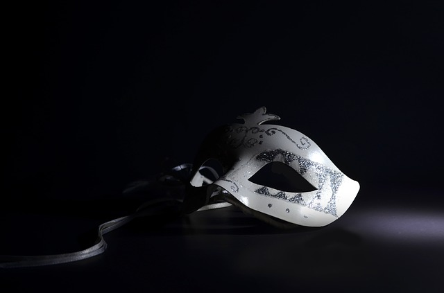
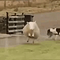

¡FELIZ ANO 2022 AGARIMO!
6
Días:
23
Horas:
12
Minutos:
16
Segundos
Para ti,
Lo mejor de mí 2021 y de mi vida eres tú.
Gracias por acompañarme en este año, por todos los momentos que hemos vivido juntas, por las risas, abrazos, caricias, besos, por la resistencia y valentía ante los desafíos que nos hemos encontrado, gracias por hacer que vuelva a ilusionarme.
Recuerdo como si fuera ayer el primer abrazo que nos dimos, de lo bien que me sentí y de lo familiar que me resultó, fue mágico ese día. Mi corazón se emocionó tanto qué solo con recordarlo me dibuja una sonrisa. Nunca me había pasado algo así.
Doy gracias cada día por seguir creciendo contigo. Sé que tengo todavía mucho que cambiar pero también sé que se puede y que lo estoy haciendo aunque sea escalón a escalón. Al igual que tú también lo haces, nos apoyamos, comunicamos y crecemos.
Quiero que sepas que invades mi mente cada segundo del día. Pienso en qué harás, en qué sentirás...
A veces los planes no salen como una quiere, hoy tenía que estar contigo y las circunstancias no han querido que así fuera. Pero no es como empieza sino como termina, y sé que este año 2022 va a terminar como queremos.
Y aunque no esté contigo físicamente, mi corazón lo está siempre.
Me encantaría dormir a tu lado y poder contemplarte con los rayos del sol acariciando tu rostro, recorrerte la piel con mis dedos y desear que tengas el mejor de los días con un beso. Cuando me besas es cómo estar en el paraíso
Eres mi alma gemela, puedes contar conmigo tanto para los buenos como para los malos momentos, hablar sin miedo y hacer lo que consideres porque siempre voy a estar para apoyarte en todo lo que necesites y sin fallarte.
Cuando eres feliz yo también lo soy, y si estás mal yo también lo estoy, eres parte de mí.
Muero de amor cuando nos seguimos el juego y cuando nos sale nuestro lado bobalicón.
Estoy profundamente enamorada de ti y puedo afirmar que soy la mujer más feliz del universo por haber encontrado a una mujer como tú. Has arrasado y conquistado mi corazón. Y sigues haciéndolo cada día que pasa. Quiero una vida contigo dónde podamos ser nosotras y brillar como nunca antes.
VAMOS ALL-IN CON EL 2022, este es nuestro año, el año 6
P.D: Cómo puedes apreciar, hay un contador en la web que indica cuanto falta para vernos, y de aquí hasta que ese contador se termine, cada día habrá una nueva sorpresa en esta web. Hoy día 1 ha sido esta carta, el día 2 habrá otra cosa más y así día tras día hasta verte cuya sorpresa será en persona para celebrar nuestros 6 meses juntas y el nuevo año que entra.
Te love!!! ❤
Numerología 2022: el nuevo año de energía 6
Antes que nada, la explicación de por qué hoy te comparto esta información, me hizo mucha ilusión aquel día en el que nos pusimos con el libro que tienes de numerología y como dos almas curiosas por naturaleza que somos, nos pusimos a realizar nuestros cálculos y ver el significado de nuestro camino y encontrarle el sentido.
Me gusta cuando nos ponemos a hacer cosas que van más allá de lo corriente, es difícil de explicar lo feliz que me hace el poder hacerlo, poder ir más allá contigo en tantos aspectos es algo que me tiene irresistiblemente loca por ti.
He estado por la tarde leyendo la información al respecto sobre lo que numerológicamente representa este año y te pongo a continuación, el conjunto de cosas que me han resultado interesantes.
¡Allá vamos!
Comienza un nuevo ciclo energético, un año de mayor equilibrio.
Ahora bien... Luego de la ruptura del año 4 y el alboroto creativo del año 5, el universo le brinda al planeta Tierra un anual número 6.
Esta vibración es completamente diferente a las anteriores. Aquí la consigna tiene que ver con la búsqueda del equilibrio entre las partes y el todo, la armonía, los nuevos valores, la familia, la empatía por el otro y la construcción de un nuevo modelo existencial más contemplativo. Al número 6 no le gusta el conflicto: mueve un patrón emocional para resolver los aspectos de la vida.
Equilibrio en el sentido de la responsabilidad, lo que nos importa, lo que amamos, deseamos y queremos crear.
La búsqueda de lo que nos hace sentir plenxs y el balance en todas las áreas de nuestra vida.
Año donde se caen las máscaras, en el que nos vamos a cuestionar nuestra libertad y los límites impuestos.
¿Qué aceptamos? ¿Qué es justo y qué no? ¿Qué hacemos con nuestra libertad?
La salud será un tema importante, nos haremos responsables de mejorar nuestra salud, prestaremos atención a nuestros cuerpos y a nuestros hábitos.
Conectaremos con las necesidades de nuestro corazón, las máscaras se caen para dar vida a quienes somos, personas más auténticas, reales, justas y responsables.
Según avanza el año veremos como todo se va equilibrando y entenderemos todo el poder que tenemos para hacer de este año un gran año.
Plano personal
La energía 6 rige nuestro mundo emocional, por lo que estaremos aprendiendo, sanando, cambiando, buscando balance en todo lo que tenga que ver con familia, relaciones, amor, equipos. Mirar más hacia adentro que hacia afuera.
Cada uno de nosotros estará poniendo límites también en algún área de su vida. ¿Qué relaciones quieres nutrir y cuáles quieres soltar? ¿Qué amas y cómo cuidas lo que amas? ¿Y qué no estás dispuesto a seguir tolerando? ¿A quién o a quiénes requieres poner límites (sanos) y cómo puedes hacer esto?
Es un año de tomar fuerza, hacernos más fuertes internamente, física, mental y espiritualmente. Descubriendo quién eres, qué quieres y sobre todo hacia dónde vas.
Es un año para enfocarse en lo que SI quieres y dejar de ver lo que no quieres. Soltar los miedos, ganar confianza y crear una nueva realidad basada en expandir el amor en nuestras vidas.
Ahora vuelvo a escribirte yo, este es un año de equilibrio, donde crear un vínculo aún más fuerte y sano contigo cariño.
Enfocarnos en lo que queremos e ir a por ello, apoyarnos e impulsarnos, yo quiero una vida contigo, un año en el que hacernos fuertes juntas. También crecer espiritualmente y en todos los ámbitos que podamos.
Fuera máscaras y bienvenida autenticidad que hay detrás. Me comprometo a ello y solo a darte amor e ilusión.
Llevamos 81 días sin café y podremos con cualquier reto que nos pongamos.
Vamos a ser como esta oveja =D
Te love vidas!!! ❤
Aries y Aries ❤
Cuando dos Aries se juntan, hay muchas posibilidades de que, de un momento a otro, lleguen los fuegos artificiales.
El fuego es el elemento de Aries , por eso las personas nacidas bajo este signo del zodiaco son intensas y apasionadas, siempre listas para vivir momentos de aventura junto a su pareja. Los arianos son también fuertes y temperamentales, algo que se refleja claramente en el plano afectivo.
Aries y Aries puede convertirse en la pareja perfecta. Necesitan a alguien fuerte a su lado, pero a la vez que no se pase de fuerte…
Se trata de una relación de igual a igual donde se mezclan, a la par, pasión y fogosidad.
Suelen ser personas que odian la falsedad y cualquier otra clase de artimañas: juntas pueden conseguir ser muy felices, siempre y cuando, no intenten someterse mutuamente. Aries tiene como virtud la pureza, así que cada vez que se demuestran amor, saben que, sin duda, es sincero.
La compatibilidad aries con aries es muy favorable porque al tener las personalidades similares se complementan. Igualmente, las relaciones suelen durar mucho cuando se tratan de personas de estos dos signos porque se diferencian del resto en que son líderes por naturaleza.
Aries con aries en el amor rendirán buenos frutos porque son personas que están activas permanentemente y son apasionadas lo que alimentará el fuego de la pasión de manera constante.
Como son personas líderes de forma natural, generalmente no les gusta que los manden. Les cuesta mucho adaptarse a aquellas personas que son autoritarias por esta misma razón. Al ser así, aries con aries se sienten atraídos siempre, no es raro ver dos personas de parejas con estos signos.
Cómo es Aries en el amor
- Las personas nacidas bajo el signo de Aries son directas e impacientes, por eso a los arianos en el amor les cuesta tanto esperar. Cuando quieren a alguien lo hacen con mucha intensidad, del mismo modo que cuando desean a una persona les cuesta mucho aguardar con paciencia todo el proceso de cortejo. Suelen ir por lo que quieren, arriesgando siempre al 100%.
- Hay algo que cautiva de los aries en el amor: su intensa pasión. Son personas altamente sexuales, disfrutan mucho el contacto y el afecto y no escatiman en ofrecerle cariño a su pareja. Un ariano es muy sexual pero también cuenta con una faceta romántica, por eso disfruta de los detalles y del tiempo en pareja.
- Recuerda que se trata de un signo muy directo que aprecia la honestidad. Los dramas, las confusiones, los secretos y las intrigas no sientan bien a los arianos.
Somos muy aries y utilizaremos nuestras fortalezas para crecer como pareja.
Te love millones!!! ❤
Te love vidas!!! Disfruta los vídeos❤
Todo para mi amor
Por ser muy guaba y como vamos a dejar las pelis de miedo, he pensado en que podemos empezar este 2022 con algunas de estas películas.
Pelis de netflix con temática LPelis divertidas para ver en 2022
Series de temática L que podemos ver el 2022
40 mejores películas de netflix
Películas alabadas por la crítica